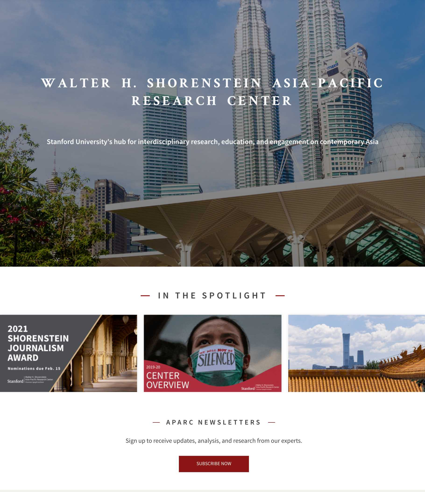
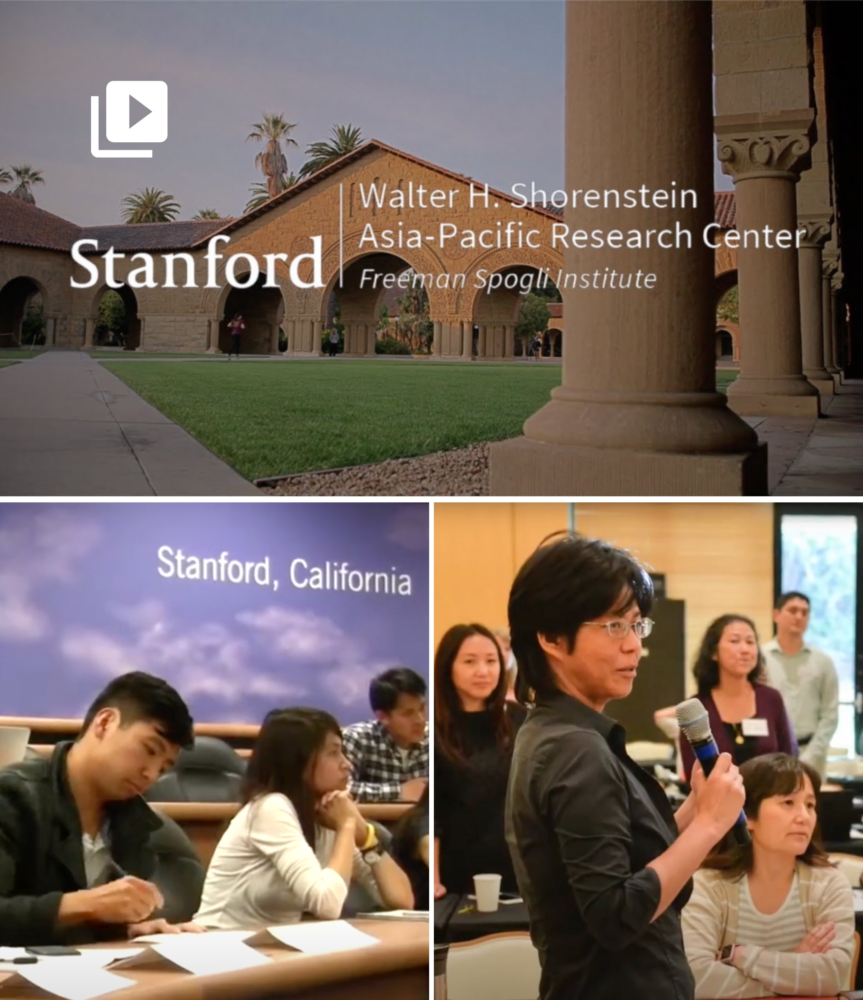
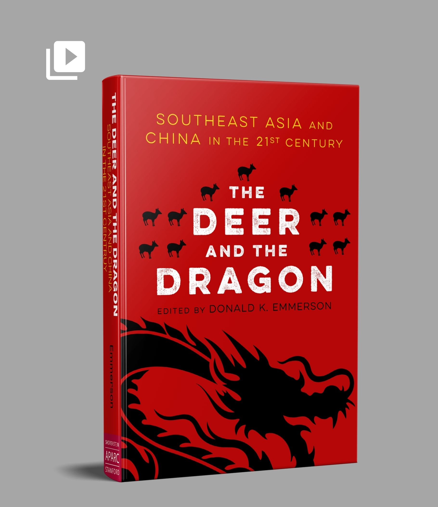
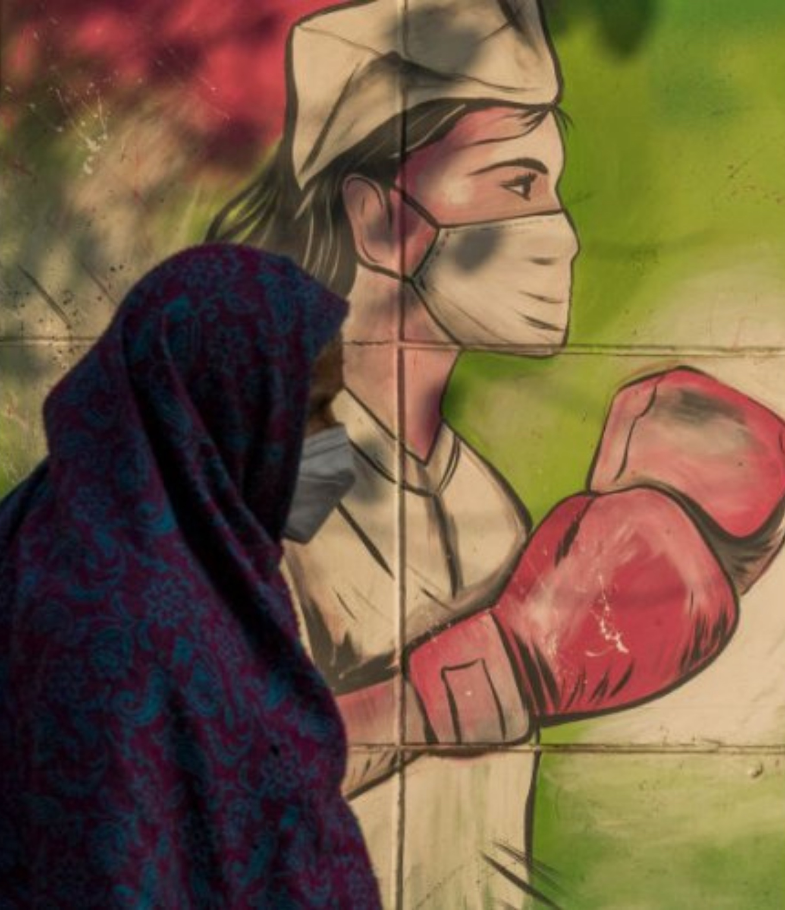

Website
Social media
SEO
Email
Work
Case studies
Website
Social media
SEO
Email
Testimonials
Contact
Noa Ronkin
menu
Work
Case studies
arrow_drop_down
Testimonials
Contact
Work
Web and digital
Marketing collateral
Event Ccration and media relations
Corporate narrative
Writing
Editing
Back to Top
Web and digital

Website strategy, design, and copy - Stanford Asia-Pacific Research Center (APARC)
Promotion site and publication marketing - 'Being in North Korea' (Stanford APARC, 2020)
Podcast - Stanford APARC expert on healthy aging in Asian economies
Long-form videos - interviews with Stanford APARC scholars

Short-form video - About APARC YouTube intro
Short-form video - APARC newsletter

Short-form video - 'The Deer and the Dragon' book promo
Marketing collateral
infographic - Stanford APARC book 'Healthy Aging in Asia'
Annual report - Stanford APARC 2018-19 center overview
Brochure - Stanford APARC - Global Affiliates Program
Event curation and media relations
White House top Asia policy officials outline China strategy at Stanford Oksenberg Conference
Stanford Shorenstein Journalism Award honors press freedom champion Maria Ressa
U.S. Special Envoy for North Korea delivers first public address at Stanford
American Friends of the Hebrew University - NEXUS:ISRAEL inaugural conference
Corporate narrative
HURIDOCS - redefined organization narrative as used in 2018-20 strategy
Lowy Preservation Program - a framework for Lowy's preventive conservation services
Benetech Labs Partners Program - Labs concept and partner pitch
Writing
News articles and press releases

How COVID-19 disproportionately affected marginalized populations in Asia
Terms of engagement: Ambassador Scot Marciel on U.S.-Southeast Asia relations
Coauthor of bestseller 'Billion Dollar Whale' wins journalism award
Interviews
India's US-China balancing act
Chinese ambitions and U.S.-China relations
COVID-19 and Chinese governance
Blogs
Lowy Fine Art - framing da Vinci's Salvator Mundi
Ask Lowy - resources for the fine art community
Benetech - clean water app by Benetech Labs
Benetech - Martus - encryption for human rights
Benetech - Miradi app for conservation management
Benetech - Aaccessibility Metadata Project
Executive bylines
Data and the Human Touch - Reuters
Human rights and data security - Huffington Post
Accessible ebooks provide equal opportunity - UNICEF
Academic writing
Monograph - 'Early Buddhist Metaphysics' (Routledge, 2005)
Book chapter in 'Buddhist Philosophy' (Oxford Universty Press, 2009)
'Abhidharma' - invited entry in the Stanford Encyclopedia of Philosophy
Editing
Global Development Incubator - report
EYElliance - report
Dalberg Global Development Advisors - report
Let's talk
Contact me